Create a “home” experience for class teams that is authentic to education
My Role
Lead designer for educator and student scenarios on core feature team. Collaborated across three partner teams
and worked with PM’s, engineers, researchers, and writers.
Background
Current Class Team Experience
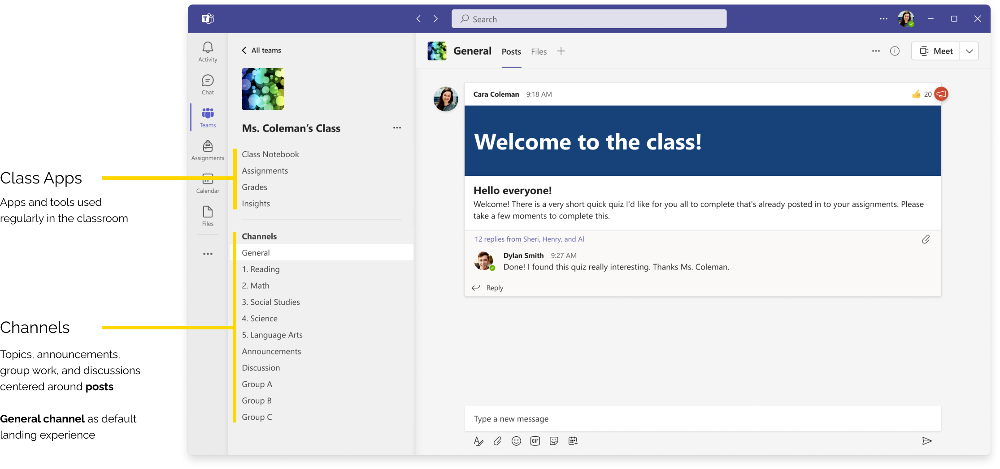
Problem
Through our customer feedback site, we saw potential to improve the current class team experience.
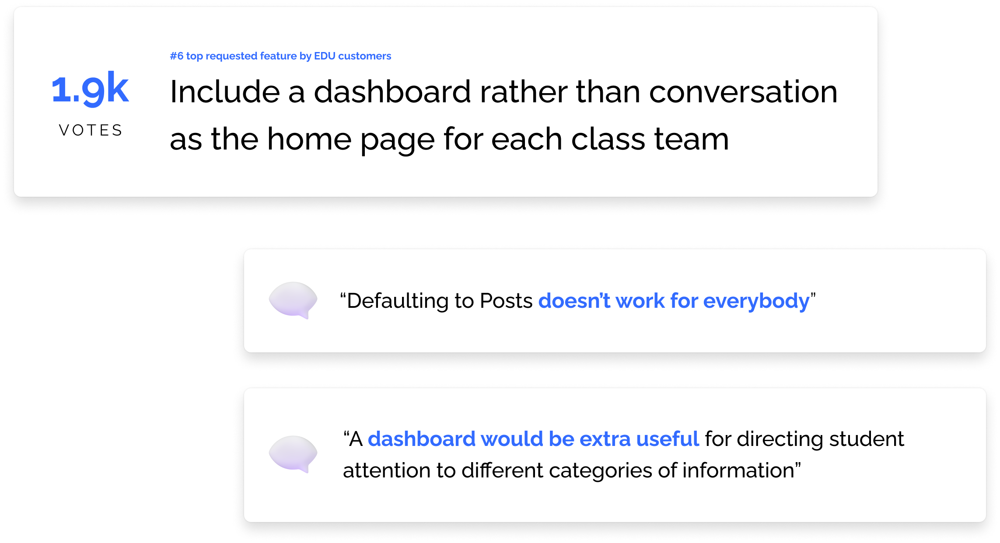
The General channel is not an authentic “home” or landing page experience for class teams.
Teachers can’t customize the layout
Posts don’t offer enough flexibility in content
Hard to find important information in a “feed”
Research
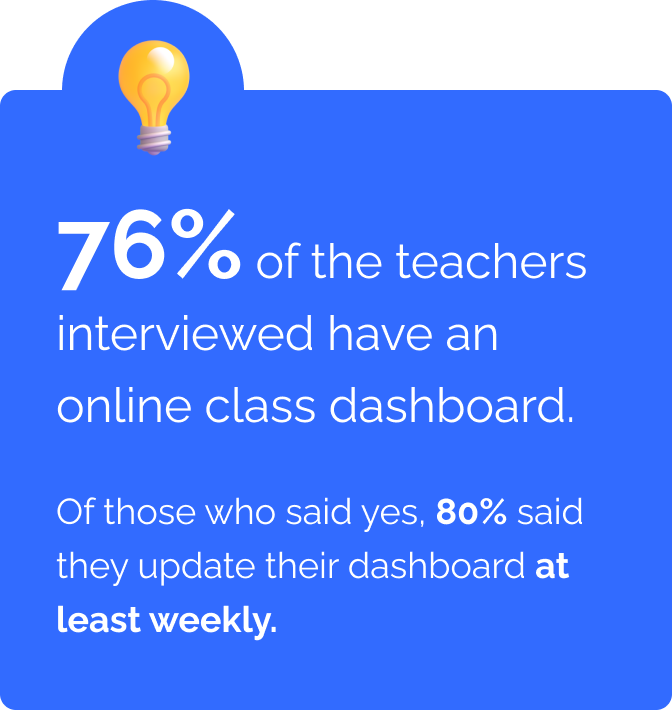
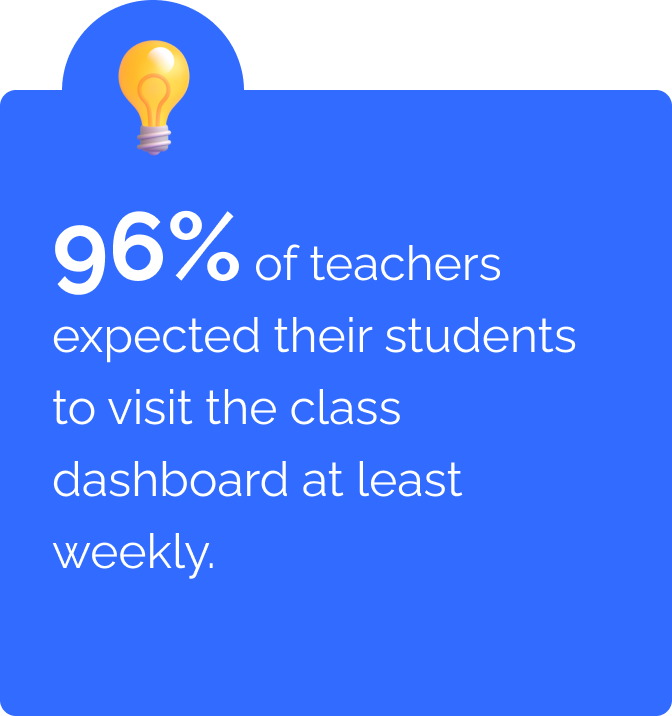
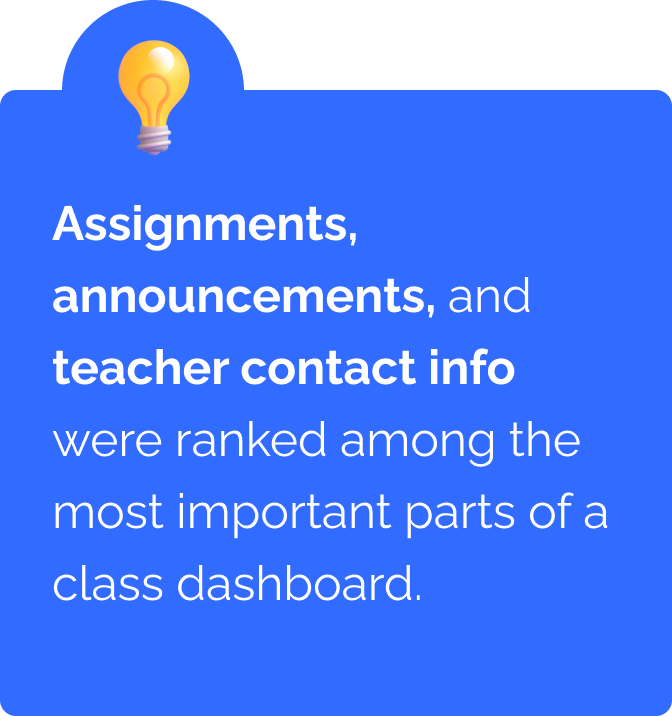
From user interviews with 100 teachers, split evenly among elementary, middle school, high school, and higher education
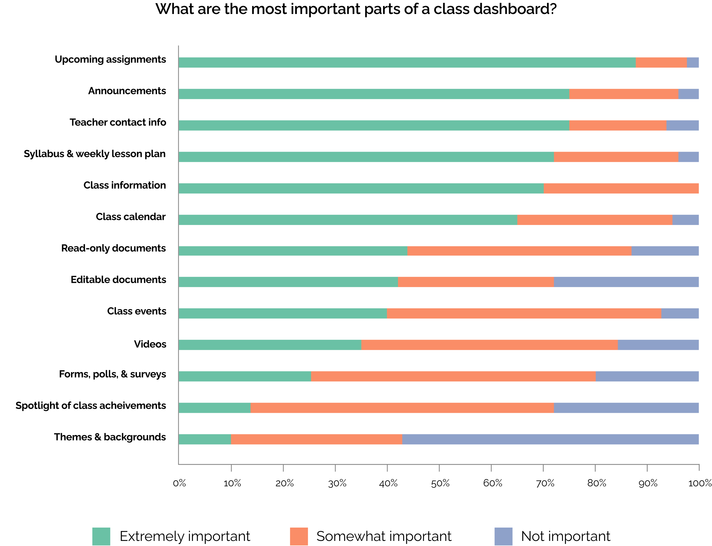
Opportunity
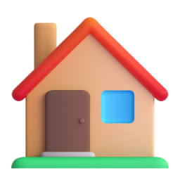
Dashboard as a “home” for class teams instead of a General channel
We saw this project as a opportunity to
Increase customer engagement in class teams
Help students and educators prioritize and find important information
Meet teachers and students where they are – build EDU authenticity
We also saw the opportunity to collaborate cross-org with Microsoft SharePoint, a website building platform with
several existing web parts (widgets).
Ideation
To kick off our collaborations, the Teams EDU + SharePoint teams conducted a design jam together,
hoping to set the stage for the project direction and goals.
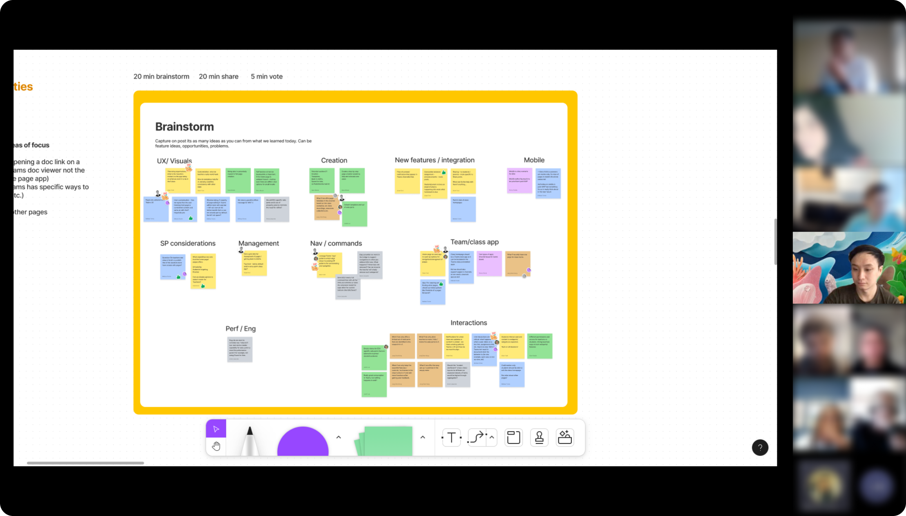
From this design jam, we defined three key principles:
Easily discoverable
Must be easy to access for both educators and students
Customizable
Allow teachers to decide what is most important for their class
Value off the bat
Minimize set up and create rich default states
With SharePoint’s expertise in site building and customization, we pushed forward with the idea of home dashboard
powered by SharePoint pages and web parts.
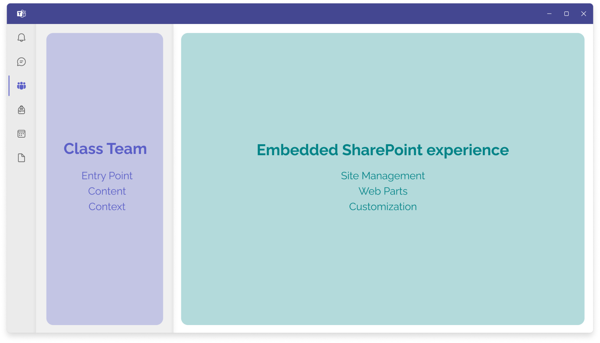
Design challenges
#1. How should a home dashboard be built into class teams?
After exploring various models, we eventually decided between two frontrunners.
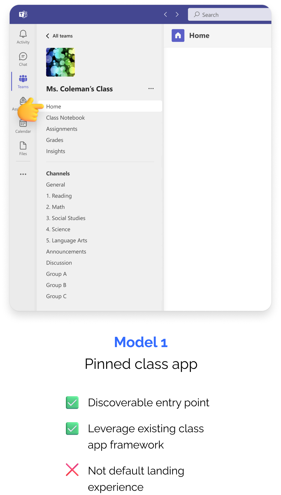
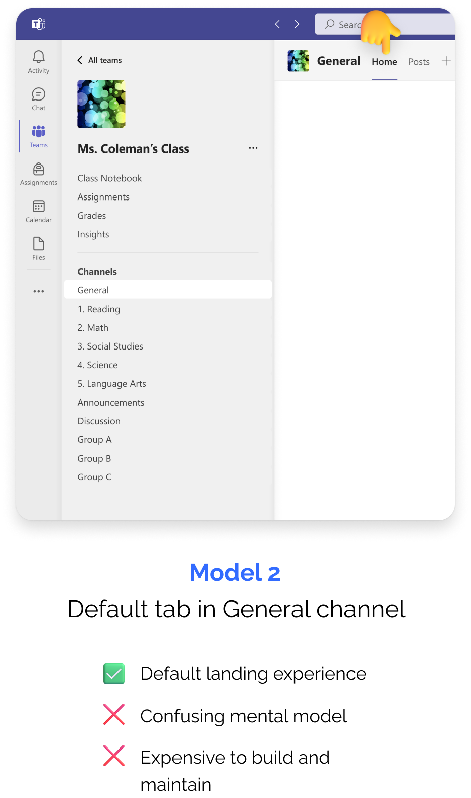
Ultimately, we decided to go with Model 1, since it was both discoverable and utilized our existing framework that customers understood.
Furthermore, we did not want to confuse customers who already used Posts in the General channel.
We agreed that we should revisit the idea of setting the “Home” class app as the default landing experience over the General channel after the initial release.
#2. How do we provide value off the bat?
To start, we wanted to leverage SharePoint’s existing web parts to automatically pull information from the class including files, assignments, and calendar events.
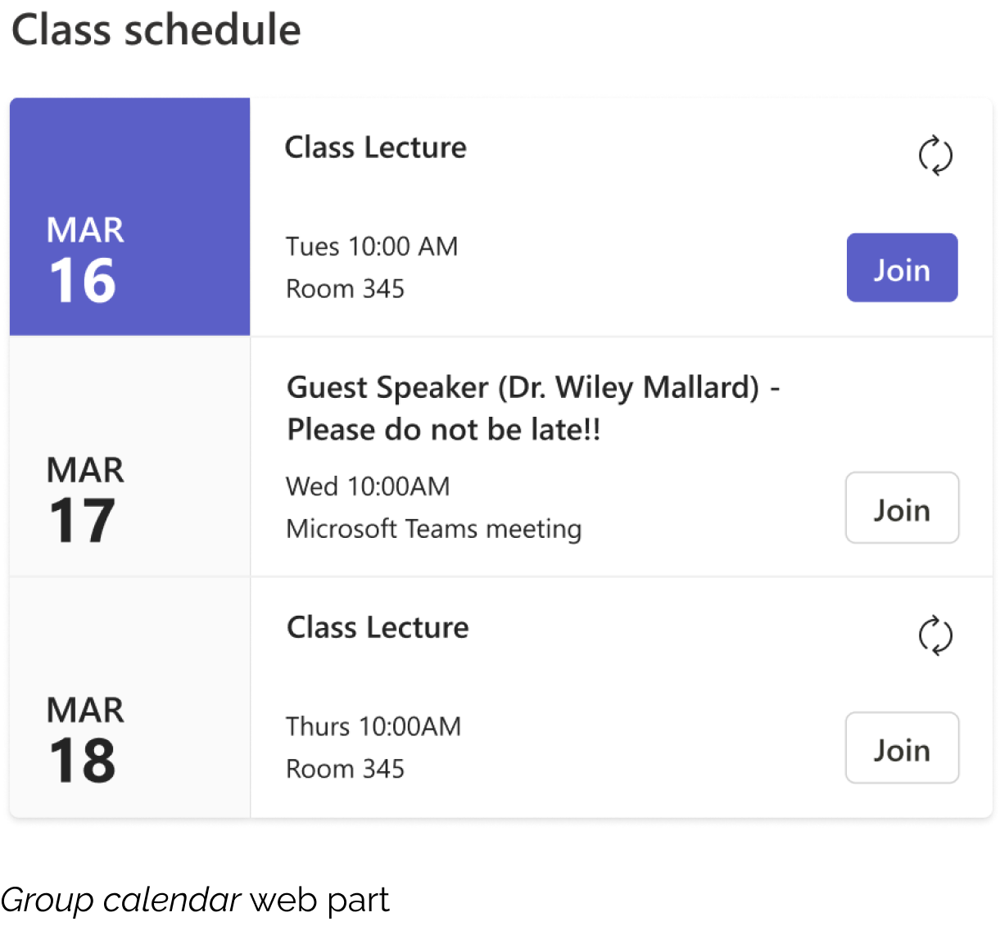
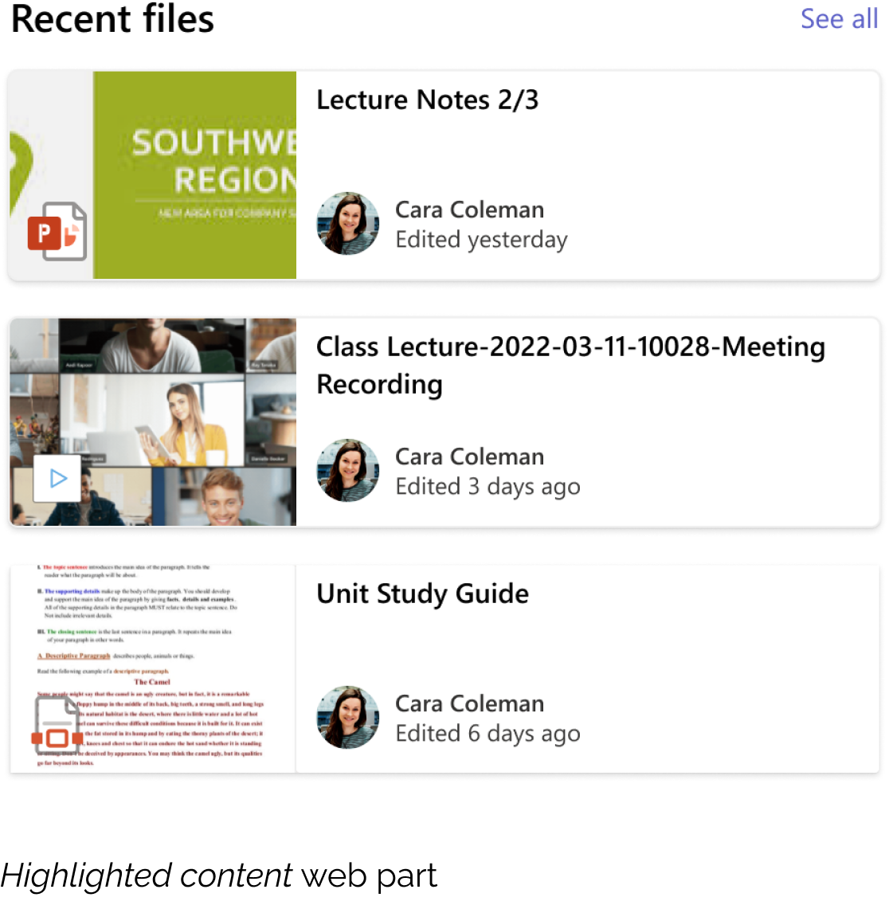
From SharePoint’s previous data, we also knew that customer engagement increased when starting a site template rather than from scratch.
Referencing our research study on class dashboards, we proposed a new class home template as a default state.
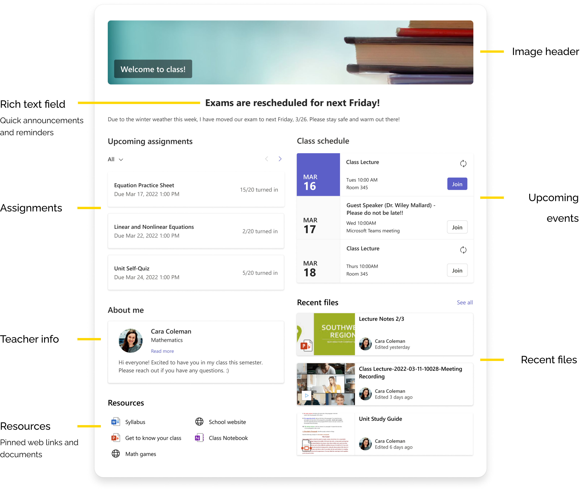
#3. How do we make this feel like one cohesive product?
Even if we were using a SharePoint page as the home dashboard for a class team, we wanted to make sure the experience felt native to Teams.